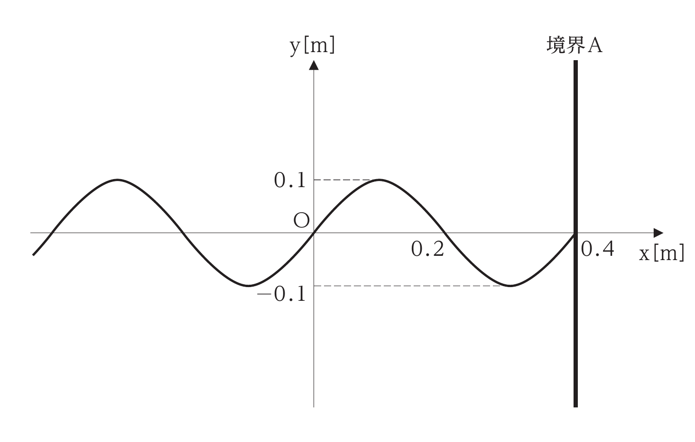
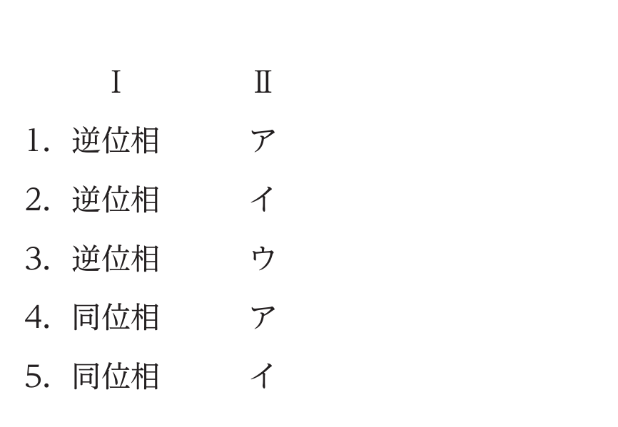
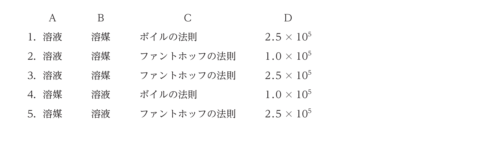
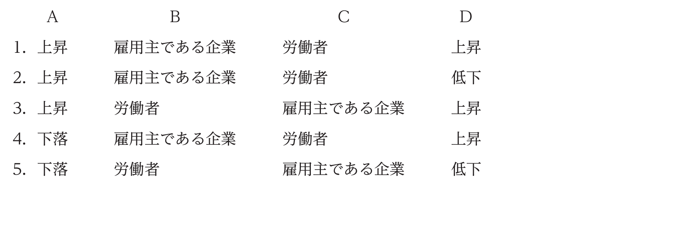
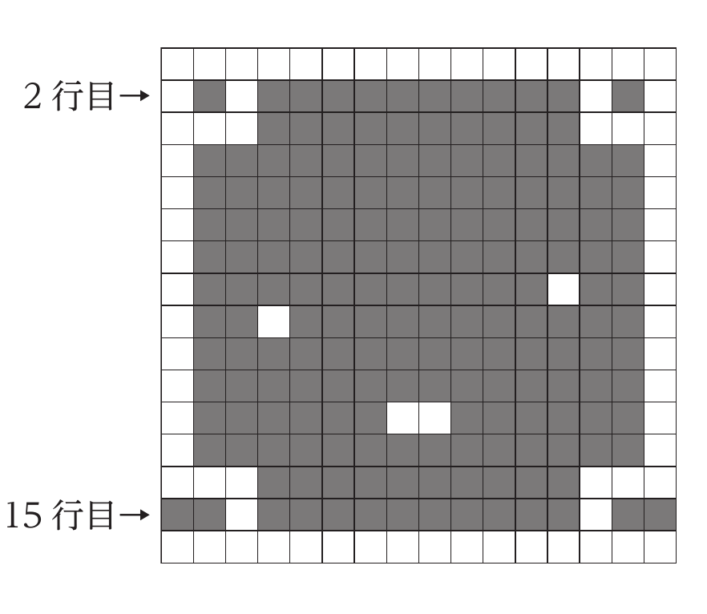

2025年度 基礎能力試験Ⅱ部 問題
先に自力で解いてから、必要な問題だけ解説へ進みます。正答番号・解法はこのページには表示していません。人事院公式の原本PDFを開く ↗
注意事項
- 問題は30題（31ページ）で、解答時間は1時間30分です。
- この問題集は、本試験種目（基礎能力試験I部及びII部）終了後に持ち帰りができます。
- 基礎能力試験II部の途中で退室する場合は、退室時の問題集の持ち帰りはできません。退室時には、基礎能力I及び基礎能力IIの問題集を回収し、希望する方には後ほど渡します。別途試験官の指示に従ってください。なお、試験時間中に、この問題集を切り取ったり、転記したりしないでください。
- 下欄に受験番号等を記入してください。
第1次試験地／試験の区分：教養／受験番号／氏名
指示があるまで中を開いてはいけません。
問1
技術や研究をめぐる近年の動きなどに関する記述として最も妥当なのはどれか。
- 令和6(2024)年8月、文部科学省は、近年の自然科学分野の論文について、他の論文に引用された回数が上位に入った論文数を国別等に調査したところ、中国が世界1位、米国が2位となり、日本は前回調査の6位から順位を上げて3位となったことを公表した。研究に力を入れる中国の工業化についてみると、1970年代以降、華中・華南の内陸部に経済特区や経済技術開発区が設けられ、外国企業の誘致が進められた。一方、沿海部は開発が遅れて内陸部との間の経済格差が拡大したため、これを解消すべく、2000年代に東部大開発が行われた。
- 令和6(2024)年11月、経済産業省は、「次世代型太陽電池戦略」において、2040年までに、既存の太陽電池を全て「曲げられる太陽電池」とも呼ばれる「ペロブスカイト太陽電池」に切り替えることを発表した。同電池は、加工性や耐久性に優れ、建物の壁面など様々な箇所に設置できる。一方、従来型の太陽電池と比べ、快晴でないと発電効率が悪く、重量があるため、普及に向けて改良が進められている。なお、同電池の主要な原材料はヨウ素であり、ヨウ素は、ヘリウムと同じく、貴ガス(希ガス)に属する元素でイオンになりやすい。
- 令和6(2024)年6月、文部科学省は、スーパーコンピュータ「富岳」の後継機の計算基盤を、従来のコンピュータから次世代コンピュータである量子コンピュータへ転換する方針を発表した。「富岳」の後継機は、計算能力を富岳の1,000万倍以上に高めることとし、2030年頃の運用開始を目指している。コンピュータを構成する物理的な装置をハードウェアといい、ハードウェアは、演算装置と記憶装置が組み込まれたCPUや、ハードディスクなどの制御装置が組み込まれたオペレーティングシステム(OS)などから構成されている。
- 令和6(2024)年11月、我が国の政府は「国民の安心・安全と持続的な成長に向けた総合経済対策」を決定した。この中で、人工知能（AI）及び半導体分野については、令和12(2030)年度までに10兆円以上の公的支援を行うなど、先端・次世代半導体の国内生産拠点の整備や研究開発支援を実施することとされた。なお、半導体の材料に用いられるケイ素は、酸素とともに、地殻を構成する主な元素であり、地殻の主な化学組成としては二酸化ケイ素が挙げられる。
- 令和7(2025)年2月、我が国の政府は、新型コロナウイルス感染症の経験を踏まえ、新たな感染症への対応や新薬の開発力を強化するための「健康・医療戦略」を決定した。この中で、十分な薬の在庫があるにもかかわらず高額の特許料が原因で多くの人が新薬を使用することができない「ドラッグ・ロス」の解消に向けて、高額療養費制度を見直し、患者の自己負担の上限額を引き下げることとされた。なお、感染症対策については、あらかじめ他の動物につくらせた抗原を含む血清を注射する予防接種などがある。
問2
近年の国際情勢などに関する記述として最も妥当なのはどれか。
- 2024年6月、 EU 加盟 27 か国で実施された欧州議会選挙において、 極右政党の「国民連合」が大きく議席を伸ばして国内第一党となったイタリアでは、 中道左派を率いてきたメローニ首相が、 イタリア議会下院を解散して総選挙を行うと発表した。 EU は 1990年代にパリ条約により成立し、2010年代からは単一通貨ユーロの流通が開始され、 競争力の高い共通市場となった。しかし、 英国は、 トラス首相の下で実施された国民投票で過半数が EU 離脱を支持したため、2020年1月に EU を離脱した。
- 2024年11月、 イスラエルとレバノンのイスラム教シーア派組織ハマスの戦闘をめぐり、 イスラエル・レバノン両政府は、 米国とフランスの仲介により停戦合意に至った。 イスラエルがレバノンのゴラン高原などを占領した第 4 次中東戦争では、6日間という短期間で停戦に至り、ゴラン高原に非武装地帯が設けられた。 ゴラン高原では、 国連平和維持活動 (PKO) が展開され、イスラエルとレバノンの停戦合意監視に当たり、 我が国からも、 国連平和維持活動協力法 (PKO協力法 ) が成立して以降初めて、 自衛隊が派遣された。
- 2024年11月、 中国政府は、 ベトナムと領有権を争う南シナ海のスカボロー礁について、 領海を示す根拠となる領海基線を定めたと発表した。 これに対してベトナム政府は、 領海などの範囲を改めて明確に規定する海域法を制定して対抗した。 中国の海洋進出の歴史をみると、13 世紀初め、 元の永楽帝は、 南シナ海以西の朝貢貿易を拡大するため、 鄭和に命じ、 大艦隊を率いてインド洋方面に数次にわたる南海諸国遠征を行わせた。 この大艦隊は、 アフリカ東海岸に到達して、 プトレマイオス朝から領土の一部を奪うなど、 アフリカ大陸進出の先駆けとなった。
- 2024年11月に行われた米国大統領選挙で、 民主党のトランプ氏が、 米国史上 2人目の女性大統領を目指した共和党のハリス副大統領に大差で勝利し、 翌年1月、 第 47 代米国大統領に就任した。 米国大統領を連続せずに 2 期目を務めるのは、 ケネディ大統領以来 2人目である。1960年代に就任したケネディ大統領は、 キューバ危機でソ連と対決姿勢をとり、 その後を継いだニクソン大統領は、 ベトナムへの本格的な軍事介入に乗り出し、 中国やソ連の支援を受ける北ベトナムに大規模な爆撃 ( 北爆 ) を行った。
- 2024年12月、 ノルウェーのオスロでノーベル平和賞の授賞式が行われ、 日本原水爆被害者団体協議会 (日本被団協 ) が同賞を受賞した。 核兵器のない世界を実現するための努力と核兵器が二度と使用されてはならないことを証言によって示してきたことが授賞理由とされている。 同賞はこれまで、 非核三原則を唱えた佐藤栄作元首相などの個人のほか、 核兵器の脅威や科学者の責任を議題としたパグウォッシュ会議、 核兵器廃絶国際キャンペーン (ICAN) などの団体に贈られてきた。
問3
近年の法改正などに関する記述として最も妥当なのはどれか。
- 令和 6 (2024) 年4月、 改正障害者差別解消法が施行された。 同法は、 民間事業者が、 障害者に対し不当な差別的取扱いを行うことを禁止し、 また、 障害者への合理的配慮の提供を努力義務として定めている。 第二次世界大戦後、 国連総会において世界人権宣言が採択され、 国際人権規約が発効したが、 いずれも法的拘束力はなく、 障害者の人権や権利保護に関して実効性が課題となっていた。 そのため、2020年代には、 法的拘束力を持つ障害者権利条約が発効し、 我が国も同法の施行をもって、 同条約を批准した。
- 令和 6 (2024) 年5月に成立した改正民法では、 親権が子の利益のために行使されなければならないことが明記された。 また、 離婚後に父母の一方が親権を持つ単独親権の制度を廃止し、 離婚後も父母双方が親権を持つ共同親権が導入されることとなった。 我が国では、 明治時代にドイツの法学者ボアソナードを招いて民法の編纂が行われたが、 この民法案は江戸時代以前の体制が温存されていると批判を受けたため、 戸主・家督相続制の規定を削除した上で、19 世紀末に公布された。
- 令和 6 (2024) 年11月、 フリーランス・事業者間取引適正化等法が施行された。 同法では、事業者が、 従業員を使用しないフリーランスに業務委託をした場合、 事業者は書面などにより取引条件を明示することが義務付けられている。 かつての我が国の労使慣行は、 終身雇用制、 年功序列型賃金、 企業別労働組合を特徴としたが、 経済のグローバル化などにより、 就業や賃金の形態に変化がみられるようになった。2010年代には、 時間外労働の上限規制や高度プロフェッショナル制度の導入などを内容とする働き方改革関連法が成立した。
- 令和 7 (2025) 年2月、 第 7 次エネルギー基本計画が閣議決定された。 同計画では、2040年度の我が国の電源構成の目標は、 再生可能エネルギーが 7〜8割、 火力が 1〜2割、 原子力が1割程度とされ、 火力と原子力発電への依存度を低減することが明記された。19 世紀後半から20 世紀前半にかけて、 レントゲンによる電子の発見やキュリー夫妻による X 線の発見、 湯川秀樹による中性子の存在の予言など電磁波分野の自然科学が発展すると、 それらの成果を用いて、火力発電や原子力発電などのエネルギー分野での技術革新が進んだ。
- 令和 7 (2025) 年6月、 公立学校教員に残業代の代わりに月給の一定割合を支給する「教職調整額」を廃止し、 教員の残業時間に応じた手当額を支給することとした改正教員給与特別措置法が成立した。 新たな手当制度は教員の人材確保のための処遇改善を目的としており、 令和 8(2026) 年度から導入される。 第二次世界大戦後、 民主教育の理念を示す教育基本法が制定されると、 国の行政委員会として教育委員会が文部省内に設けられ、 全国の教員の処遇改善や技能向上のために中心的な役割を担うこととされた。
問4
我が国の交通機関・輸送機関などに関する記述として最も妥当なのはどれか。
- 令和6（2024）年1月、最大震度7を記録した能登半島地震は土砂崩れや海底の隆起などをもたらし、道路が寸断されるなど移動が困難な状況が生じた。自衛隊は、海側からホバークラフトを使用して物資を運ぶなど救助活動を展開した。ホバークラフトは浮上航行する水陸両用船で、ホバークラフトの一種であるエアクッション型揚陸艇は重機も輸送することができる。なお、自衛隊法には自衛隊の任務として災害派遣が規定されており、原則として都道府県知事等からの要請を受けて、自衛隊を派遣することができるとされている。
- 令和6（2024）年4月、民間の有識者で作る「人口戦略会議」は、2050年までに市町村の約8割が消滅する可能性があるなど、地方都市の人口減少の深刻さを示す報告書を発表した。一方、地方都市の中には、LRTを導入し、LRTと自家用車を市街地内の主な移動手段とすることで、都市機能の集約化による効率的な生活の実現を目指すコンパクトシティ構想を進めているところもある。LRTとは、道路から電気の供給を受けてタイヤで走行する「無軌条電車」で、トロリーバスとも呼ばれ、振動や騒音が少ない高床式車両でバリアフリー仕様となっている。
- 令和6（2024）年4月に政府が決定した「海洋開発等重点戦略」では、洋上風力発電所の設置を領海内の沖合までに拡大することや、鉱物資源探査を排他的経済水域まで精力的に行うことが示され、また、洋上風力発電所の点検や海底の鉱物資源探査のための「自律型無人探査機」の開発にも着手することとされた。この探査機は、水中ドローン又はUAVとも呼ばれ、水中を自動航行することができる。我が国の領土面積は世界で60位台前半の順位であるが、領海及び排他的経済水域の面積は、アジアではフィリピンに次ぐ広さで、世界では20位台後半の順位である。
- 令和6（2024）年11月、改正道路交通法が施行され、電動キックボードは、駆動補助機付自転車（いわゆる電動アシスト自転車）とは異なり、交通反則通告制度が適用されて免許不携帯やヘルメット非着用は罰則の対象となった。電動キックボードとは、一人用のボードに電動モーターを搭載した車両で、バッテリーには一般にリチウムイオン電池が用いられる。同電池は、軽量・小型・低電圧で寿命が長いという長所をもつ一方、原料のリチウムは、生産の約9割が中国とロシアであり、安定的な原料確保の面で課題がある。
- 令和6（2024）年の訪日外国人旅行者（インバウンド）数は約2,000万人で、過去最高であった新型コロナウイルス感染症の流行前の令和元（2019）年の約2,500万人に次ぐ人数となった。令和5（2023）年策定の観光立国推進基本計画では、三つの基本方針の一つとして「体験型観光拡大戦略」を掲げており、「公道レンタルカート」の運転や人力車への乗車などの体験がインバウンドに人気を博している。なお、人力車は、江戸時代後期、伊勢神宮・善光寺・讃岐金比羅宮などへの寺社参詣の手段として利用されたが、明治時代、文明開化による鉄道馬車の登場で衰退した。
問5
我が国の社会を取り巻く状況などに関する記述として最も妥当なのはどれか。
- SNS などを利用して特殊詐欺や強盗などの犯罪グループの参加者が募集される、 いわゆる闇バイトは、 募集を行った者と参加者が共同で犯罪の計画から実行までを行い、 固定化されたメンバーによって、 犯行が繰り返される点に特徴がある。 我が国では、 個人情報保護の観点から、SNS 利用者の投稿内容などの行動履歴を SNS 事業者が利用することは法律で禁じられていたが、政府は、 闇バイトの増加を受け、 令和 6 (2024) 年4月以降、 事業者がバイト募集に関連する投稿に限って行動履歴を活用し、 闇バイト募集の投稿を事業者自身で削除できることとした。
- 令和 6 (2024) 年9月の能登豪雨では、 活発化した秋雨前線の影響で 24 時間最大降水量が1,000 ミリを超え、 統計開始以降最大の記録となった。 この豪雨では、 河川の氾濫や土石流などが発生し、 同年1月に発生した能登半島地震の際よりも全壊した住宅数は多く、 奥能登地域の人口は、 同年の 1年間で、 他の地域への転出などにより約 3割減少した。 秋雨前線とは、 南から北上してきた暖かく湿潤な小笠原気団と、 北の冷たく乾燥したシベリア気団との境目にできる停滞前線で、 シベリア気団の寒気が前線に大量に流れ込むと、 集中豪雨が起きやすくなる。
- 令和 6 (2024) 年9月、 約 60年前に静岡県で一家 4人が殺害された事件で死刑が確定した男性の再審判決で、 最高裁判所は、 この男性に無罪を言い渡した。 死刑が確定した事件の再審で無罪となるのは、 戦後初めてであった。 刑事裁判の判決の確定後に、 有罪・無罪を問わず、 事件の事実認定に合理的な疑いが出てきた場合に裁判をやり直す再審制度については、 過去の最高裁判決において、「疑わしきは被告人の利益に」という刑事裁判の原則を再審に適用しないとされていることから、 再審請求が認められるのは極めて狭き門となっている。
- 令和 6 (2024) 年12月、 東京都が支援する、 再生可能エネルギーを使って生産する「グリーン水素」のトライアル取引の入札が行われた。「グリーン水素」は再生可能エネルギー由来の電力を使って水を電気分解して作られた水素で、 製造過程でも二酸化炭素を出さないことから脱炭素化につながるとされている。 一方、 天然ガスなどの化石燃料を使って作られた水素のうち、 製造過程で二酸化炭素を大気中に放出する製法で作られた水素は、「グレー水素」と呼ばれる。
- 令和 7 (2025) 年3月、 農林水産省は政府備蓄米を放出し入札を行った。 これは、 前年2月には 5kg 当たり約 4,000 円であった店頭でのコメの価格が、1年後の 2月には 8,000 円を超えるなど高騰したことを受けたもので、 この放出によってコメの価格は、 入札の翌月に約 6,000円まで下落した。 我が国は、 コメを輸入自由化 (関税化 ) していないが、 世界貿易機関 (WTO) 農業協定により政府がミニマム・アクセス制度に基づき決められた量を義務的に輸入し、 これを政府備蓄米として保管しており、 今回の放出はこの輸入したコメを全量放出したものである。
問6
0°≦θ≦60°のとき、sin⁶θ＋cos⁶θの最小値はいくらか。
- 1/16
- 1/4
- 7/16
- 1
- 25/16
問7
次は、波に関する記述であるが、Ⅰ、Ⅱに当てはまるものの組合せとして最も妥当なのはどれか。
○ 音波の干渉を利用すると、雑音(ノイズ)を弱めることができる。これは、一部のヘッドホンに利用されており、周囲のノイズをマイクで取り込み、その音と Ⅰ の音を加えて、ノイズを弱めている。このような仕組みをノイズキャンセリング(アクティブノイズキャンセリング)という。
○ 波は、異なる媒質が接する境界や端で反射する。媒質が振動方向に対して自由に動ける端を自由端といい、一方、媒質が固定されて、振動方向に対して動けない端を固定端という。自由端に波の山が入射すると、山が反射し、固定端に波の山が入射すると、谷が反射する。図は、x軸の正の向きに進む、振幅0.1 m、波長0.4 m、周期1.0秒の連続した正弦波の先端が、x=0.4 mの位置にある境界Aに達したときの様子を示したものである。境界Aが固定端であるとき、図の状態から1.0秒後に Ⅱ のような波形が観測できる。


問8
物体の運動に関する記述として最も妥当なのはどれか。
- 物体が外から力を受けていないとき、 あるいは、 受けていてもそれらの合力が 0 であるとき、静止している物体は静止し続け、 また、 運動している物体は等速直線運動を続ける。 物体には、同じ運動状態を保とうとする性質があり、 この性質を慣性という。
- 物体を静止した状態から落下させたとき、 空気抵抗を無視すると、 物体が落下する速さは、 物体の質量が大きいほど、 大きくなる。 また、 物体が落下する速さは、 物体の質量と重力加速度の大きさの積となる。
- 物体を静止した状態から落下させたとき、 実際には、 空気抵抗がはたらく。 空気抵抗の大きさは、 物体が落下する速さのほか、 物体の形や大きさによって異なり、 同じ質量の小球の場合、 半径が小さい方が空気抵抗は大きい。 また、 物体が落下を始めてから十分な時間が経過すると、 空気抵抗を受ける物体の落下する速さ (終端速度 ) は 0 となる。
- 力は、 一つの物体に一方的にはたらくことはなく、 二つの物体の間で及ぼし合う。 ただし、 これは、 重力や静電気力など、 空間を隔ててはたらく力については成り立たない。 また、 物体が運動しているときも成り立たない。
- 粗い水平面上に物体を置き、 水平面に平行な力を加えても静止しているとき、 物体は静止摩擦力を受けている。 静止摩擦力は、 物体の接触面積のみによって決まる。 一方、 粗い水平面上に物体を置き、 水平面に平行な力を加え、 滑り出したとき、 物体は滑りの向きとは逆向きに動摩擦力を受ける。 動摩擦力は、 物体の接触面積と物体が動く速さのみによって決まる。
問9
次は、浸透圧に関する記述であるが、A〜Dに当てはまるものの組合せとして最も妥当なのはどれか。
溶液を構成する一部の成分は通すが、他の成分は通さない膜を半透膜という。U字管を半透膜で仕切って、片側に水溶液を、もう一方に純溶媒（純水）を、液面の高さが等しくなるように入れて長時間放置すると、A 側の液面が上がり、B 側の液面は下がる。これは、濃度の差を軽減するために、B 分子が半透膜を通って A 側に移動するために起こり、このように膜を通して物質が移動する現象を浸透という。浸透は、植物細胞における水の移動などでみられる。
一方、A 側に浸透圧以上の圧力を加えると、通常の浸透とは逆向きに B 分子の浸透が進む。この現象を逆浸透といい、工業用水の製造などに利用されている。
浸透圧とモル濃度・絶対温度（K）の関係についてみると、希薄溶液の浸透圧は、溶質の種類に無関係で、溶液のモル濃度と絶対温度に比例する。この関係は C と呼ばれる。この法則を用いて、グルコース1.8 gを溶かした27℃の水溶液250 mLの浸透圧を求めると、約 D Paとなる。ただし、グルコースの分子量を180とし、気体定数を8.3×10^3 Pa・L/(K・mol)とする。

問10
金属元素に関する記述として最も妥当なのはどれか。
- 金属元素には典型元素と遷移元素があるが、このうち炎色反応を示す金属元素を典型元素という。典型元素を含んだ化合物やその水溶液を炎の中に入れると、それぞれ元素に特有の色を示す。例えば、銅は紅色、プラチナ(白金)は黄色、マグネシウムは青緑色となる。したがって、炎色反応を利用することで、典型元素の定性分析を行うことができる。また、花火の色は、様々な金属元素の炎色反応の組合せでつくられている。
- 水素元素を除く1族元素をアルカリ土類金属といい、ナトリウムやバリウムなどがあり、これらの1族元素は全て1価の陽イオンになりやすい。これらの金属の単体は、空気中では速やかに酸化されて金属光沢を失い化合物を形成するため、アルコール溶液中に保存する必要がある。また、塩素や硫黄などのハロゲンの単体と反応して、塩化ナトリウムや硫酸バリウムなどの塩を生じる。
- 金属では、金属結晶中の各原子の価電子は、もとの原子に固定されずに、自由電子として結晶中を自由に動き回ることができる。この自由電子が原子どうしを結び付ける役割をしており、自由電子による金属原子間の結合を金属結合という。金属の性質として展性があり、金属結晶の変形が可能なのは、原子の配列を変えても自由電子による原子どうしの結合が保たれるからである。アルミホイルは、アルミニウムのこの性質を利用してつくられている。
- 一般に、金属は高温になるほど、電気伝導性が大きくなる。これは、結晶中の原子が高温になるほど、激しく振動するようになるので、電子が移動しやすくなるためである。また、電気伝導性を大きくするために、金属に他の金属を混ぜた合金をつくることがある。銅にアルミニウム、マンガン、マグネシウムを混ぜた合金である黄銅(真ちゅう)や、亜鉛に鉄を混ぜた合金であるトタンは、銅や亜鉛の単体の金属に比べて電気抵抗率が大幅に低下し、電気伝導性が大きくなる。
- 金属の反応性は、イオン化傾向と密接に関連しており、イオン化傾向の大きい金属ほど反応性が高く、例えば、酢酸鉛(Ⅱ)水溶液中に銅板を入れると、銅が溶け出して鉛が析出する。イオン化傾向の異なる2種類の金属を電解質水溶液に浸して導線で結ぶと、電流が流れて電池となる。電池において、酸化反応が起こって電子が流れ出る電極を正極、電子が流れ込んで還元反応が起こる電極を負極という。鉛蓄電池では、正極に亜鉛を、負極に銅を、電解質に硫酸鉛(Ⅱ)水溶液を用いる。
問11
真核細胞の構造体に関する記述として最も妥当なのはどれか。
- 遺伝情報の発現に関連する構造体には、核や核小体がある。核の内部にはDNAとタンパク質から成る染色体があり、DNAの遺伝情報は核膜孔を通って、核外にある核小体に移動する。核小体では、DNAの二本鎖の間の結合が切れ、ほどけた一方の一本鎖に相補的なRNAのヒストンが結合し、その後、隣り合うヒストンが連結してmRNAが合成される。
- タンパク質の合成に関連する構造体には、リボソームがある。mRNAと結合したリボソームには、mRNAの連続する五つの塩基配列に対応したアミノ酸をtRNAが運び、このアミノ酸が連結してタンパク質は合成される。この過程を複製といい、遺伝情報がRNAを仲立ちとしてDNA→RNA→タンパク質と一方向に流れるという考え方をRNAワールドと呼ぶ。
- タンパク質の運搬に関連する構造体には、小胞体やゴルジ体がある。小胞体は、核膜の外側の膜とつながって存在する構造体で、リボソームで合成されたタンパク質などの物質の輸送に関わっている。ゴルジ体は、タンパク質を小胞体から受け取り、糖を付加するなどした後、細胞外に分泌するはたらきがあり、ホルモンや酵素などを分泌する細胞でよく発達している。
- エネルギーの供給に関連する構造体には、ミトコンドリアや葉緑体がある。ミトコンドリアでは、発酵により有機物からエネルギーが取り出され、一方、葉緑体では、光エネルギーを利用し、光合成により有機物が合成される。ミトコンドリアと葉緑体は、いずれも核と同じDNAを持つが、独自には増殖することができず、細胞内の細胞小器官を利用して増殖する。
- 植物細胞に特徴的な構造体には、細胞壁や中心体がある。細胞壁は真核細胞共通の構造体であるが、特に植物細胞では発達しており、骨格を持たない植物が地上高く成長できるのは、細胞壁の肥厚により支持強度が高まるためである。また、中心体は、微小管と呼ばれるタンパク質の管が並んだもので、細胞分裂時の細胞板の形成に関与している。
問12
ヒトにおける刺激の受容と反応に関する記述として最も妥当なのはどれか。
- 耳は、外耳、中耳、内耳から成り、聴細胞は中耳のうずまき管に存在している。うずまき管にある基底膜は、入口の基部では幅が広く柔らかく、先端部にいくにつれて幅が狭く硬くなる。このような構造により、基底膜のどの部分が振動したかを大脳が感知することで音の高低を聞き分けることができ、音波の周波数が大きい場合は低い音、小さい場合は高い音として認識する。
- 眼は、外界の明暗が変化すると虹彩の大きさが変化する。明るい所から暗い所に入ったときには、瞳孔が縮小することで、虹彩が拡大する。また、このとき、最初は視細胞の桿体細胞でロドプシンが生産され続けるため、視細胞の錐体細胞が反応せずに何もものが見えないが、しばらく暗い所にいるとロドプシンの生産が止まり、錐体細胞の感度が上がって再びものが見えるようになる。
- 脊髄は、外部から受容する刺激のうち、迅速に反応すべき刺激を脳に伝えるはたらきをもつ。指先などに熱いものが触れたとき無意識のうちに素早く手を引っ込める反応は、皮膚が受容した刺激が脊髄神経から大脳に伝わり、即座に大脳から運動神経を通して手を引っ込めるという指令が伝わることで生じる。
- 骨格筋は、単核で細長い細胞である筋繊維が束になって構成されている。筋繊維の中には多数の筋原繊維が集まっており、それぞれの筋原繊維は、内部にFe²⁺（鉄イオン）を蓄えた筋小胞体で覆われている。筋収縮は、ATPが合成されるときに生じるエネルギーを用いて、細いアクチンフィラメントの間に太いミオシンフィラメントが滑り込むことで起こる。
- 舌は、水などに溶けた化学物質を味覚器で感知する。味覚器にある味細胞の受容体に化学物質が結合することで、電気信号が生じ、それが味神経により大脳に伝えられると、苦味、甘味、うま味、塩味、酸味といった味覚が生じる。味覚は、味神経の興奮が、反応する受容体の種類ごとに異なった経路で大脳に伝わることで識別される。
問13
太陽系の惑星に関する記述として最も妥当なのはどれか。
- 16 世紀にコペルニクスは、 惑星は太陽を中心とした円軌道を周回するという地動説を唱えた。ケプラーは、 観測データから惑星の軌道と運動を明らかにしようと考え、 火星が衝になった日の火星や地球の位置を使って、 火星の公転周期ごとの火星の位置を調べるなどして、 火星の軌道が太陽を一つの焦点とする楕円であることを明らかにした。
- 水星は、 磁場を持たず、 地球とは逆向きに自転している。 二酸化炭素を主成分とする厚い大気に覆われており、 太陽側の表面温度は 400℃以上となる。 また、 表面は多数のクレーターで覆われている。 水星への探査については、 現在、 多国間の共同プロジェクトによる探査機が打ち上げられており、2030年には水星に着陸予定である。
- 地球よりも内側を公転する内惑星が、 地球から見て太陽の方向にあるときを外合という。 内惑星は外合のときに最も地球に近づくので、 一番明るく、 大きく見える。 日の出前に西の空に見える金星は「明けの明星」、 日没後に東の空に見える金星は「胃の明星」と呼ばれ、 毎年それぞれ 6月頃、10月頃に決まって観測することができる。
- 火星は、 直径は地球の約半分、 質量は地球の約 4 分の 1 であり、 密度は地球より高い。 メタンを主成分とする大気に覆われており、 大気圧は地表で地球の約 2倍である。 洪水によってできた地形などがあり、 過去には水が豊富に流れていたと考えられている。 火星に探査機が初めて着陸したのは、 月への初めての着陸から約 30年後の 1990年代のことであった。
- 木星、 土星、 天王星、 海王星は、 いずれも木星型惑星であり、 その組成は水素とヘリウムを主成分とするが、 木星と土星は、 天王星と海王星よりも、 氷成分の割合が高い。また、 いずれも多数の衛星を持っているが、 環 (リング ) を持っているのは土星のみである。 これらの惑星は、 米国が打ち上げたバイキング号により連続的に探査されている。
問14
近現代の思想に関する記述として最も妥当なのはどれか。
- H. アーレントは、 目的を達成するために最も合理的な方法を考える「道具的理性」に基づいてつくられたルールが、 社会の公共性を形成し、 民主的な社会統合の基礎になると主張した。 これに対して、 J. ハーバーマスは、 ギリシアのポリスを理想とし、 人間どうしが言葉を通して関わり合う「労働」によって異質な存在としての各人の「生の複数性」が許容されることに、 公的領域の意義を認めた。
- J. ロールズは、 各人が将来どのような能力や地位をもつことになるか知らされていない無知のヴェールがかけられた原初状態を想定した。 そして、 その中で各人が自由に競争することによって生じる社会的・経済的不平等については、 個人の人格的自由と経済的自由を最大限に尊重する「分配の正義」の原理により、 政府が介入することは認められず、 政府に求められる役割は、 自由の権利や適正競争の確保を目的とした警察・司法に限られると主張した。
- コミュニタリアンである R. ノージックは、J. ロールズは善に優先して正義を唱えていると批判した。 そして、 コミュニティを支え、 成員に共有される共通善を公共目的として追求し、 実現する政治を目指すべきだとした。 一方、M. サンデルは、 リバタリアニズムを代表する哲学者として、 J. ロールズの「分配の正義」を批判し、 社会的に弱い立場の者の自由を守るために政府は市場経済へ介入し、 福祉政策を採るべきだと論じた。
- A. センは、 基本財・資源の分配に着目する J. ロールズに対し、 仮に同量の資源をもっていても、 障害者と健常者との間ではその資源を使って実際に福祉を達成できる度合いに差が生じることを指摘した。 そして、 個人が選択できる生き方の幅を広げることが福祉であると考え、 個人にとって実現可能な状態・行動の集合である潜在能力 (ケイパビリティ ) を高めることを目指す潜在能力アプローチを提唱した。
- E. レヴィナスは、 西欧哲学の基礎にあるロゴス ( 言葉 ) 中心主義、 世界は神を究極の目標とするという思想、 男性的なものの優位などの考え方を「脱構築」しようとした。 特に、 西洋と東洋の二項対立については、 西洋が、 東洋に対して「他者」というイメージである「顔」を付してきたことを指摘し、 西洋中心主義をオリエンタリズムと呼んで脱構築した。 一方で、M. サンデルの影響を受け、 正義については脱構築できないものであると結論付けた。
問15
文学作品などに関する記述として最も妥当なのはどれか。
- 紫式部の『源氏物語』は、主人公の光源氏が栄華を極めるまでの半生と孤独を抱えた晩年の二部構成となっている。国風文化を象徴する長編物語であり、日本の古典文学の最高峰と評される。後の時代に様々な注釈書が作成され、本居宣長は『源氏物語玉の小櫛』において、儒教的観点からその解釈を新構築し、主人公の光源氏の好色に託して勧善懲悪を描くことに物語の本質があるとした。
- バラタ族内の王位継承と領地の争いを描き、人間の責務と解脱への道を説く一節が著名な『リグ＝ヴェーダ』と、シェヘラザードという才女が国王のために物語を毎夜続けるという形式の『千夜一夜物語』は、古代インドの二大叙事詩とされ、共にゾロアスター教の聖典に数えられる。いずれも東南アジア各地の舞踊等の題材となっているほか、カンボジアの寺院遺跡アンコール＝ワットの回廊には叙事詩の場面を表した数多くの彫刻がある。
- ドストエフスキーの『カラマーゾフの兄弟』は、父親殺しの事件をめぐる心理的葛藤を描いた、人間の魂の救済などをテーマとする長編小説であり、登場人物が語る劇詩「大審問官」のシーンなどが有名である。トルストイの『戦争と平和』は、ナポレオンのロシア遠征を背景に貴族社会を中心とした諸階層の人々の運命や独自の哲学を描いた長編小説であり、無抵抗主義を唱えたトルストイの思想はインド独立運動を率いたガンディーにも影響を与えた。
- 司馬光の『資治通鑑』は、史書であると同時に文学的色彩の強い作品である。古代の義人の悲劇の話に対する「天道是か非か」という作者の問い掛けに始まり、「四面楚歌」の言葉の由来となった「垓下の戦い」や、「背水の陣」の由来となった「赤壁の戦い」など、現代でも使われる用語のもととなった数々の歴史的出来事が描かれている。清少納言の随筆『枕草子』にも書の例として登場するほか、作者司馬光の人生は中原中也の小説『山月記』の題材ともなっている。
- ゲーテの『若きウェルテルの悩み』は、周囲からの期待を背負い、神学校に入学した主人公の挫折と苦悩を通じて人間の精神の自由と幸福を描いた小説である。ドイツ留学経験のある徳冨蘆花がゲーテの数々の作品の翻訳を行ったことでも知られる。ヘミングウェイの『夜と霧』は、精神科医である作者の経験をもとに、戦争の克明な記録と心情の変化が巧みに描かれた戦争小説であり、作者は後年、ノーベル文学賞を受賞した。
問16
我が国の文化や国宝・重要文化財などに関する記述として最も妥当なのはどれか。
- 縄文文化は、紀元前8世紀頃から紀元後3世紀半ばまで栄えた文化で、狩猟、金属器、縄文土器を特徴とする。縄文土器のうち、燃え上がる炎を想起させる力強い造形の火焔型土器は、この時代の草創期につくられた土器で、九州から出土したものに国宝に指定されているものがある。また、墳丘墓の副葬品として出土する土偶のうち、東北から出土した遮光器土偶には重要文化財に指定されているものがある。
- 平安時代の貴族文化は院政期に入ると、新たに台頭してきた武士や庶民とその背後にある地方文化を取り入れて、新鮮で豊かな表現を生み出した。絵画では、説話や物語を水墨画の技法で描き、絵と詞書を織り交ぜながら時間の進行を表現する絵巻物が発達した。国宝指定の『伴大納言絵巻』では、平治の乱が摂関家の視点で描かれ、同じく国宝指定の『平等院鳳凰堂扉絵』では、京都の貴族や庶民の生活が主題として動的な線描で描かれている。
- 室町時代には、武家文化と公家文化の融合が進み、また、東アジアとの活発な交流に伴って、大陸文化と伝統文化の融合も進んだ。足利義満の時代に建てられた国宝指定の『東求堂同仁斎』に見られる寝殿造は、近代の和風住宅の原型となっている。その後、足利義教は、応仁の乱の後に、北山に別荘をつくり、ここに国宝指定の『慈照寺銀閣』を建てた。義教の時代の文化は、禅の精神に基づく簡素さと伝統の趣が際立つようになり、北山文化と呼ばれた。
- 江戸時代の17世紀後半から18世紀初めには、政治が安定して経済が発展し、上方を中心に、町人らを主な担い手とする元禄文化が生み出された。絵画では京都の尾形光琳が装飾性の強い画法を取り入れて琳派を興し、陶器では同じく京都の野々村仁清が上絵付の手法をもとに色絵を完成させ、京焼の祖とされた。光琳の代表作として『紅白梅図屏風』が、仁清の代表作として『色絵藤花文茶壺』が知られ、共に国宝に指定されている。
- 明治時代初期、西洋文化が一気に流入し、伝統的な日本画や木彫などが、一時顧みられなくなった。その後、日本画が米国で、木彫が英国で特に高い評価を受けたことから、伝統美術を復興する動きが起こった。岡倉天心とともに日本美術院を創立した黒田清輝は、狩野派の伝統画法に西洋画の技法を取り入れた日本画『湖畔』を描き、英国で学んだ荻原守衛は、伝統的な日本彫刻の技術を駆使した彫刻『老猿』を制作し、共に重要文化財に指定されている。
問17
我が国の各時代の仏教に関する記述として最も妥当なのはどれか。
- 仏教は7世紀初頭に大陸から我が国に伝えられ、その後、聖徳太子（厩戸王）がその基本思想を憲法十七条に盛り込むことにより、仏教を広く民衆に浸透させようとした。また、聖徳太子は、仏教の力により国家を安定させようとする鎮護国家の根本理念の下、冠位十二階の制を定めて畿内の氏族に対して真人、朝臣などの格付けを行った。
- 平城京への遷都の後、恵美押勝の乱や薬子の変などの国家に対する反乱が頻発した。聖武天皇は、これらの反乱によって生じた社会不安を仏教の力で取り除くため、国ごとに国分寺や国分尼寺を建てた。また、聖武天皇の時代には白鳳文化と呼ばれる仏教文化が興隆し、中宮寺及び広隆寺の半跏思惟像や興福寺の仏頭などが造られた。
- 平安京への遷都の後、天台宗や真言宗といった、奈良時代の仏教とは異なる新しい仏教が開かれた。天台宗や真言宗は、山中で厳しい修行を積むなどして国家の安泰を祈るものであったが、加持祈禱によって病気を治癒したり、災いを避けるといった現世利益の面から、貴族などの支持を集めた。
- 平安時代の後期、末法思想が社会に広く浸透する中、一遍によって、阿弥陀仏を信じて極楽浄土への往生を願う浄土教が開かれた。浄土教は庶民階級の間に広く浸透していったが、現世利益ではなく来世での往生を願うことから、貴族などにはほとんど受け入れられなかった。11世紀後半には、旧都の奈良において、南都六宗と呼ばれる仏教教理の研究を主に行う諸学派が形成され始めた。
- 鎌倉時代の中期、日蓮は鎌倉幕府の手厚い保護の下、日蓮宗の開祖となり、「南無阿弥陀仏」の題目を唱えることで救われるとの教えを広めた。同じ時期、法然が浄土宗を開き、どんな悪人でも長年にわたる厳しい修行を積むことにより阿弥陀仏による救済がなされると説き、その教えは武士や庶民に広まった。
問18
古代・中世のヨーロッパなどに関する記述として最も妥当なのはどれか。
- 古代ギリシアのポリス世界が混迷を深める頃、ギリシア北方のマケドニア王国が台頭した。アレクサンドロスは、マケドニアの王位に就くとギリシアとの連合軍を率いて東方遠征に出発し、ペルシア戦争においてダレイオス3世の軍を破り、アケメネス朝ペルシアを崩壊に導いた。この時期はヘレニズム時代と呼ばれ、その文化の代表として、ホメロスの叙事詩やパルテノン神殿が挙げられる。
- ローマが「内乱の一世紀」に突入すると、内部の反乱による混乱が頂点に達した。これを鎮めたのは実力者のカエサル、クラッスス、ブルートゥスであり、彼らは私的な政治同盟を結んで政権を握った。この政治は元首政（プリンキパトゥス）と呼ばれ、カエサルがポンペイウスに暗殺されるまで、事実上の皇帝独裁を行った。この時代のローマでは、それまでのユリウス暦をカエサルが修正し、太陽暦として導入するなど実用的文化が広まった。
- イスラーム教を唱えたムハンマドの死後、第4代カリフのアリーが暗殺されると、アリーと対立していたアッバース家のムアーウィヤがアッバース朝を開いた。その後、ウマイヤ朝が開かれると、アッバース家の一族はイベリア半島に逃れ、そこでセルジューク朝を建てた。フランク王国のカール大帝は、イベリア半島から北上してきたセルジューク朝の軍勢を撃退すると、イベリア半島の領土を奪って教皇に献じ、この領土が後の教皇領の起源の一つとなった。
- 中世ヨーロッパでは、ビザンツ帝国やイスラーム圏からもたらされたギリシアの古典が本格的にラテン語に翻訳されるようになり、ボローニャ大学に続いてパリ大学やオクスフォード大学が設立されるなど、12世紀ルネサンスと呼ばれる知の革新運動が起こった。これらの大学において、キリスト教の信仰を論理的に体系化しようとするスコラ学も、更に発展した。
- 14世紀後半にイタリアで生まれたルネサンスは、人間を基本に据える思想を中心に生じた文化運動である。ルネサンスでは事物の観察や実験が重視され、科学や技術が発達した。特にグーテンベルクが改良し実用化した木版印刷は、パピルスの普及と結び付き、情報伝達に変化をもたらした。「旧約聖書」のフランス語翻訳を行ったルターは、印刷物を通して自らの思想を広め、宗教改革を推し進めた。
問19
世界の運河とこれらをめぐる歴史などに関する記述として最も妥当なのはどれか。
- 6世紀末、唐の文帝が中国を統一した。文帝は、政治・軍事の中心である江南と、経済・農業の中心である華北の交通・物流を結ぶため、黄河と長江をつなぐ大運河の建設に着手した。文帝の子煬帝は、大運河を完成させたほか、対抗関係にあった突厥を東西に分裂させて北方の遊牧諸民族の動きを抑えるとともに、高句麗に遠征してこれを滅ぼした。また、新しい人材登用制度として、学科試験によって官吏を選ぶ九品中正を始めた。
- 11世紀以降、ヨーロッパでの遠隔地商業の主な舞台の一つであった地中海交易圏では、ヴェネツィア、ジェノヴァ、ピサなどのイタリアの海港都市が、東方貿易で香辛料や絹織物などの奢侈品を輸入し、銀や毛織物などを輸出した。このうち、「水の都」や「アドリア海の女王」とも呼ばれたヴェネツィアは、多くの島々とその間を結ぶ運河から成り立っており、東方貿易によって発展した。
- 18世紀の英国では、絹織物への需要が高まったことを背景に産業革命が始まると、技術革新によって運送業でも蒸気機関の利用が進み、交通革命が起こった。まず、ワットが蒸気機関車を実用化すると、鉄道建設が進み鉄道網が完成した。その後、スティーブンソンが蒸気船を実用化すると、運河建設が始まり、ロンドンからエディンバラまでをつなぐ運河網が完成して蒸気船による大量の鉄や石炭の運搬が可能となった。
- 19世紀末に世界最大の工業国となった米国は、内陸のフロンティアが消滅したこともあり、海外進出の機運が高まった。共和党のウィルソン大統領は、パナマの独立運動に乗じて、アメリカ＝スペイン（米西）戦争を起こした。勝利した米国は、モロッコなどの植民地を獲得したほか、パナマを保護国化し、パナマ運河の建設など積極的なカリブ海政策を推進した。民主党のジャクソン大統領の時代にパナマ運河が完成し、その管理権を米国が握った。
- 19世紀後半、エジプトは、巨費を投じてスエズ運河を建設したが、国家財政が破綻したため、スエズ運河会社の株を米国に売却した。その後、米国の保護国とされたエジプトは、第一次世界大戦後にエジプト王国として独立したが、実質的に米国による支配が続いた。これに対する不満が高まる中、20世紀半ば、ムハンマド＝アリーらが王政を倒して共和国を樹立した。大統領になったムハンマド＝アリーは、米国が経営権を持つスエズ運河の国有化を宣言した。
問20
地図や地理情報に関する記述として最も妥当なのはどれか。
- 地球の地軸は、地球が太陽の周りを回る公転面に対する垂直方向から約23度傾いているため、北半球が夏至のときには、地軸の南極側が太陽のある方向へ傾いている。この夏至の日の正午に太陽の真下になるのが、北回帰線である。また、極夜とは北極圏や南極圏の夏において太陽が沈まない現象である。
- 世界地図には様々な図法があるが、地図上で面積が正しく表現されている図法は正積図法と呼ばれており、モルワイデ図法やサンソン図法がその代表例である。また、地球上の角度の関係が地図上でも正しく表現されている図法は正角図法と呼ばれ、メルカトル図法がその代表例であるが、メルカトル図法には高緯度ほど距離や面積が拡大されるという欠点がある。
- 我が国では、兵庫県明石市を通る東経135度の経線を標準時子午線とした単一の標準時が定められているが、国土が東西に広い国については複数の標準時が定められることがあり、例えば、米国で三つ、中国で四つの標準時が定められている。また、経度180度付近には日付変更線が設けられており、日付変更線を西から東に越える場合、日付を一日だけ進めることになる。
- 地図は、一般的な地理情報を網羅した統計地図と、特定の事象に絞って情報を表現した主題図に大別される。また、統計地図の種類についてみると、例えば、その地点での数量を点の多さで表現したメッシュマップや、統計データを分かりやすく示すために元の地図を変形したドットマップなどがある。
- 地形図の中で同じ標高の点を結んだ曲線は等高線と呼ばれており、縮尺5万分の1の地形図の等高線についてみると、計曲線は10 m間隔で、主曲線は100 m間隔で描かれている。また、標高の高い方から低い方へ等高線が突き出ているところは谷を示しており、逆に標高の高い方に等高線が食い込んでいるところは尾根を示している。
問21
南北アメリカの地理などに関する記述として最も妥当なのはどれか。
- 北アメリカは、西経100度線を境として西部の湿潤地域と東部の乾燥地域に大きく分けられる。北アメリカの西部にはロッキー山脈が南北に走り、そのすぐ西側の山麓にはローレンシア台地が広がっている。また、北アメリカの東部には比較的なだらかなアパラチア山脈があり、その南側には五大湖が点在している。
- 米国においては、ヨーロッパ系白人のカトリック教徒である、いわゆるWASPと呼ばれる人々が、建国以来、政治・経済において大きな役割を果たしてきたが、1920年代に成立した公民権法を契機としてマイノリティの地位が向上していった。一方、カナダにおいては多数派のイギリス系住民と少数派のフランス系住民の間に長らく分断がみられ、公用語については、現在では英語のみが認められている。
- 米国の工業地域についてみると、北東部のデトロイト周辺のフロストベルトと呼ばれる工業地域には、鉄鋼や自動車などの伝統的な産業が集中しており、南部のテキサス州周辺のラストベルトと呼ばれる地域には、航空・宇宙関連などの産業が発展している。また、南東部に位置するフロリダ半島には、シリコンバレーと呼ばれる世界最大の先端技術産業の集積地が形成されている。
- 南アメリカでは、第一次世界大戦直後にブラジルやアルゼンチンを始めとした多くの国々が独立を果たしたが、資本が乏しいそれらの国々では、主に小規模経営によって輸出用の商品作物が栽培された。ブラジルについてみると、ブラジル高原においてパンパと呼ばれる大草原が広がっており、そこでは代表的な商品作物であるコーヒーの栽培が盛んに行われている。
- 南アメリカについてみると、赤道付近を流れるアマゾン川流域の熱帯雨林気候の地域にはセルバと呼ばれる世界最大の熱帯雨林が広がっている。一方、大陸西側で南北に長く走るアンデス山脈には高山気候がみられ、ペルーからチリ北部にかけてのアンデス山脈西側の海岸域には砂漠が広がっている。
問22
我が国の国会などに関する記述として最も妥当なのはどれか。
- ロックは、 権力を立法権と執行権に分け、 執行権優位の権力分立を唱える一方、 モンテスキューは、 権力を立法・行政・司法に分離し、 三権をそれぞれ異なる機関で運用させ、 権力の抑制と均衡を図る三権分立を唱えた。 我が国の憲法を見ると、 大日本帝国憲法は、「帝国議会」、「内閣」の章を設けていたものの、 裁判所の規定はなく、 三権分立の点で不完全であったが、 第二次世界大戦後、 日本国憲法は、「国会」、「内閣」、「司法」の各章を設け、 三権分立を明確化した。
- 国会には国政調査権が認められており、 両議院で議決することで、 国会は国政全般について調査し、 必要に応じて証人の出頭を求めて証人喚問を行うことができる。 昭和 20年代、 国政調査権の行使として地方裁判所が下した判決の調査が行われ、 判決の量刑を不当とする決議が行われたことがあったが、 最高裁判所は司法権の独立を侵害するものであると抗議し、 それ以来、 国政調査権は行使されていない。
- 国会には、 常会、 臨時会、 特別会の 3 種類がある。 常会は、 毎年1回、1月に召集され、 会期は 150日と憲法に規定されているが、 常会の会期の延長は認められていない。 このため、 内閣が必要と認めたとき又はいずれかの議院の総議員の 4 分の 1 以上の要求があったときに、 臨時会が常会の閉会に引き続いて召集されることがある。 特別会は、 衆議院議員の任期満了による総選挙後 30日以内に召集され、 内閣総理大臣の指名が行われる。
- 衆議院の先議権は、 条約の承認と予算の議決に認められている一方、 法律案の議決には認められていない。 条約の承認について、 衆議院においてその承認の議決をした後、 参議院が国会休会中の期間を除いて 60日以内に議決しないときは、 衆議院は、 参議院がその条約の締結を承認しなかったものとみなすことができる。 この場合に、 衆議院において出席議員の 3 分の 2 以上の多数で再可決したときは、 衆議院の承認が国会の承認となる。
- 大日本帝国憲法において、 天皇は統治権の総攬者と位置付けられ、 帝国議会は天皇の協賛機関であった。 一方、 日本国憲法においては、 国会は国権の最高機関であり国の唯一の立法機関であるとされ、 法を制定する立法権は国会のみにあるとされている。 国会が唯一の立法機関であることの憲法上の例外として、 両議院の規則制定権、 最高裁判所の規則制定権がある。
問23
我が国における民主主義と国民・住民参加などに関する記述として最も妥当なのはどれか。
- 現代の民主主義は、 大衆民主主義ともいわれ、 国民の誰もが政治に参加することを前提としている。 このことは、 近年、 多くの施策について、 国民に意見を募るパブリック・コメントが実施されていることにも現れている。 しかし、 大衆民主主義は、 大衆宣伝によってロビイストの支持を取り込むポピュリズムの政治に陥りやすく、 また、 投票行動への無力感や政治への不信感などから、 特定の支持政党を持たない有権者と定義される政治的無関心層が増えやすいという問題もある。
- 民主政治とは、 国民の世論に基づく政治である。 現代では、 多様なマスメディアが発達しており、 世論形成に大きな影響力を持っている。 マスメディアは、 第三者の立場で政治などを監視する役割から「第三の権力」とも呼ばれている。 また、 最近は、 新聞やテレビなどのマスメディアだけでなく、 インターネット、SNS の影響も大きくなっており、 各人が、 大量の情報を取捨選択する能力であるデジタル・デバイドを高め、 自分でよく考え、 より正確な判断をして、 政治参加することが求められている。
- 日本国憲法は、 参政権に関し、 直接民主的な制度として、 憲法改正の国民投票や特定の地方公共団体のみに適用される特別法 ( 地方特別法 ) に関する住民投票 (レファレンダム ) などを定めている。 このうち、 憲法改正については、 各議院の総議員の 3 分の 2 以上の賛成により国会が改正の発議を行い、 その後、 国民投票を行うとされているが、 令和 6 (2024) 年度末現在、 憲法改正の国民投票が行われたことはない。 一方、 地方特別法に関する住民投票は行われたことがあり、対象となった地方特別法の例として、 広島平和記念都市建設法がある。
- 地方自治は、 住民の身近な問題を住民自らの手で解決する仕組みであり、「地方自治は民主主義の学校」ともいわれる。 地方自治法では、 直接民主制の理念に基づいて、 首長の解職や条例の改廃に関する住民投票の請求などの直接請求権を定めている。 首長の解職の請求では、 必要署名数は有権者の 50 分の 1 以上で、 議会に請求をし、 議員の 4 分の 3 以上の同意があれば首長は職を失う。 一方、 条例の改廃に関する住民投票の請求では、 必要署名数は有権者の 3 分の 1 以上で、 議会に請求をし、 住民投票で 3 分の 2 以上の同意があれば、 条例は改正又は廃止される。
- NPO 法人 (特定非営利活動法人 ) は、NPO 法に基づき社会的な公益活動を行う組織・団体であり、 自然保護やリサイクル、 地域活性化のための町おこしなど、 地域住民の生活向上のための住民運動も展開している。 さらに、 国や地方公共団体のオンブズマン制度の実施に当たっては、市民に代わり行政活動を中立的立場で調査し、 是正措置を勧告する NPO 法人もある。 これらのことから、NPO 法人は、 国や地方公共団体から独立した活動を維持するため、 政府から税制上の優遇措置や財政支援を受けることはできない。
問24
20 世紀以降の我が国の政党政治に関する記述として最も妥当なのはどれか。
- 1910年代、西園寺公望内閣が、師団増設を求めた陸軍と対立して倒れると、元老の推薦によって、桂太郎が内閣を組織した。これに対し、「閥族打破・憲政擁護」のスローガンを掲げた憲政擁護運動が全国に広がり、立憲政友会の尾崎行雄と立憲国民党の犬養毅らが先頭に立って、桂内閣の退陣を要求した。この動きは第1次護憲運動と呼ばれ、この結果、桂内閣は総辞職した。
- 1920年代、貴族院議員を中心とした超然内閣である清浦奎吾内閣が発足すると、これに対して第2次護憲運動が起こり、その結果、平民宰相と呼ばれる原敬を首相とする、初の本格的な政党内閣が成立した。この原内閣から、二・二六事件で犬養毅内閣が倒れるまで、内閣総辞職の際には必ず衆議院議員総選挙が実施され、選挙に勝利した政党が政権を担う「憲政の常道」が続いた。
- 1920年代、堺利彦や山川均らによって、日本共産党がコミンテルンの日本支部として合法のうちに結成されたが、治安維持法が成立したことを受けて非合法政党となった。第二次世界大戦後、日本共産党は、GHQの指令で出獄した徳田球一らを中心に、再び合法政党として活動を開始し、1960年代には、日本社会党委員長を首班とする片山哲内閣において、民主党と共に連立を組んだ。
- 1993年の衆議院議員総選挙では、 自由民主党の議席数が過半数割れとなったが、 自由民主党は日本社会党との連立により政権を維持し、 宮沢喜一内閣が発足した。 しかし、 次の衆議院議員総選挙では、 新生党・公明党・民社党・日本新党などが合流してできた新進党が躍進して単独で政権を組織し、 その次の衆議院議員総選挙で再び自由民主党が与党になるまで、 新進党による政権が続いた。
- 2009年に行われた衆議院議員総選挙では民主党が自由民主党に勝利し、 鳩山一郎が組閣して民主党による単独政権が誕生した。 しかし、 その後総理大臣の交代を経て行われた 2011年の参議院議員選挙や続く衆議院議員総選挙では、 いずれも民主党が敗れ、 政権は再び自由民主党に移り、 安倍晋三内閣が新党さきがけとの連立のもとに発足した。
問25
第二次世界大戦後の各国の民主化などに関する記述として最も妥当なのはどれか。
- 文化大革命終結後の中国では、実権を握った江沢民が「四つの現代化」を唱え、改革開放政策を推進して経済改革を進めたものの、政治改革は行われなかった。貧富の格差や官僚の腐敗に対する不満から、1980年代後半に民主化要求運動が起こると、江沢民は運動に同情的な鄧小平総書記を解任して趙紫陽を後任とし、北京の天安門広場で行われた学生や市民によるデモ活動を人民解放軍を動員して弾圧した。
- 第二次世界大戦後に独立した、金大中政権下の韓国やマハティール政権下のインドネシアなどの発展途上国では、個人企業の奨励や公営企業への独立採算制の導入、外国資本の積極的導入などの経済施策が行われた。ポリアーキーと呼ばれるこうした経済施策は、強力な独裁体制の下、国民の自由が厳しく制限された中で進められたため、経済成長が一定程度進んだ1980年代には民主化運動が活発になり、独裁体制の崩壊、複数政党制への移行などがみられた。
- ソ連では、国民の自由な意思による政治参加を推進するため、ゴルバチョフが1990年に憲法を改正して複数政党制を導入し、自ら大統領としてグラスノスチなどの改革に着手し民主化を進めた。同時に、ソ連を構成する各国でも民主化が進んだが、ソ連の保守派である共産党幹部のエリツィンらがゴルバチョフを軟禁してクーデタを試みた。しかし、ロシア共和国やバルト三国は独立国家共同体(CIS)を結成して徹底的に対抗し、クーデタは失敗した。
- 「アフリカの年」と呼ばれた1960年の独立以来、南アフリカでは黒人に対する人種隔離政策(アパルトヘイト)が採られ、ルワンダでも白人のブール人が政権を独占するなど、黒人の政治参加は拒否された。その後、南アフリカでは1990年代にアパルトヘイトが撤回され、2000年代には黒人のマンデラ大統領が選出された。一方、ルワンダでは黒人のフツ人が虐殺されるなど混乱が続き、国連PKOが派遣されたことで、ようやく全民族が参加する選挙が実施された。
- 2010年末から発生した民衆のデモによってチュニジアの独裁政権が崩壊した模様は、携帯電話やパソコンを通じて世界中に発信され、周辺諸国の民主化運動にも大きな影響を与えた。エジプトのムバラク政権やリビアのカダフィ政権などの長期独裁政権は倒れ、これら一連の民主化運動は「アラブの春」と呼ばれた。しかし、シリアではアサド政権と反政府勢力との内戦に発展し、この過程で多数の難民が発生してヨーロッパなどに流入した。
問26
次は、物価や利子に関する記述であるが、A〜Dに当てはまるものの組合せとして最も妥当なのはどれか。
物価の継続的な下落がデフレーション（デフレ）であり、予期しないデフレが起きると予期しないインフレーション（インフレ）と同様、人々の所得分配に影響を与える。賃金を例にとると、名目賃金が一定である場合、デフレが起きると実質賃金は A する。これを雇用主である企業と労働者の間の所得分配としてとらえると、B から C への所得の移転とみることができる。
また、債券を購入したときの価格に対する債券の償還などで得られる収益の割合を利回りという。債券を満期まで持ち続けた場合、毎期に受け取る利子と、債券の満期時に受け取る償還金はあらかじめ定められているため、一般に購入時の債券価格が上昇すると利回りは D する。

問27
我が国の財政の状況に関する記述として最も妥当なのはどれか。
- 令和6 (2024)年度の一般会計当初予算の歳出についてみると、高齢化の急速な進展を受けて、年金や福祉、医療などの費用に充てられる社会保障関係費が35兆円を上回っており、主要経費の中で最大の割合を占めている。この社会保障関係費に、国債費(国債の債務償還及び利払等に充てられる費用)及び地方交付税交付金等を加えた三つの経費で、歳出全体の7割以上を占めている。
- 令和6 (2024)年度の一般会計当初予算の歳入のうち、税収は80兆円を上回っている。税収を税別にみると、所得税が20兆円を超えて最も多く、次いで法人税、消費税、酒税、相続税の順になっている。また、税収を直接税及び間接税の別にみると、直接税は間接税の2倍を上回っている。
- 令和6 (2024)年度の一般会計当初予算の歳入のうち、公債金の金額についてみると、特例公債(赤字国債)と建設公債(建設国債)はほぼ同額となっている。我が国では、財政法の規定により全ての公債発行が禁じられていることから、特例公債及び建設公債の発行に当たっては、それぞれ個別に法律を制定する必要がある。
- 一般会計歳出総額から、国債費及び地方交付税交付金等を除いた金額を基礎的財政収支対象経費といい、この基礎的財政収支対象経費が公債金を除く歳入額を上回る状態を、プライマリー・バランスが赤字であるという。我が国では、プライマリー・バランスの赤字が続いていたが、令和6(2024)年度は10年ぶりに黒字に転じた。
- 公債依存度とは、公債発行額を一般会計歳出総額で除して算出した数値であり、令和6(2024)年度の一般会計当初予算では、約20%となっている。また、特例公債、建設公債などから成る普通国債残高は、平成元(1989)年度以降一貫して増加していたが、令和2(2020)年度に1,000兆円を超えたのをピークとして、令和3 (2021)年度から令和5(2023)年度にかけては減少がみられた。
問28
我が国の社会保障などをめぐる状況に関する記述として最も妥当なのはどれか。
- 我が国の総人口は、令和5 (2023)年時点で約1億2,400万人であり、そのうち、65歳以上の人口が占める割合は40%を上回っている。健康寿命が長くなる中、65歳以上の人々が働き続けられるよう、高年齢者雇用安定法によって、定年年齢が65歳を下回ることが禁止されており、また、65歳以上の人を被保険者とする後期高齢者医療制度が老人福祉法において施行されている。
- 社会保障制度のうち、公的扶助に分類されるものとして、生活保護制度がある。これは、資産や能力その他あらゆるものを活用しても生活に困窮する人に対して、健康で文化的な最低限度の生活を保障するとともに、その自立を助長する制度であり、保護の種類として生活扶助、住宅扶助、医療扶助などがある。令和6(2024)年末時点で、生活保護の被保護実世帯数は150万世帯を上回っている。
- 公的年金制度の被保険者数は、令和5(2023)年度末で約4,000万人となっている。我が国の年金の財政方式は積立方式を基本としており、将来の年金給付に必要な原資をあらかじめ保険料で積み立てることとされている。かつては、現役世代から集めた年金保険料を高齢者に給付する賦課方式が採用されていたが、現役世代の負担軽減のため、1980年代に賦課方式から積立方式へと移行した。
- 介護保険制度は、1970年代前半に高齢者介護を支える基本的な枠組みとして創設された制度であり、50歳以上の人が被保険者として加入する。被保険者は、原則3割の自己負担割合で介護サービスを利用することが可能であり、一定の所得を下回る場合は、自己負担割合が2割となる。近年は、介護そのものだけでなく、介護予防サービスも保険の対象となる。
- 雇用保険制度は、労働者が失業した場合に、労働者の生活の安定を図り再就職を促進するために、失業給付や休業補償給付などが支給される制度であり、労働者災害補償保険制度は、業務上の事由による負傷や疾病などの際に、療養補償給付や教育訓練給付が支給される制度である。どちらの制度も、使用者と労働者が半分ずつ保険料を負担する仕組みとなっている。
問29
移民、難民、多文化共生に関する記述として最も妥当なのはどれか。
- 近年、飢餓や貧困が原因で国外へ脱出する経済難民や、紛争などにより居住地を追われ、国境付近で避難生活を送る国内避難民が増えている。難民の地位に関する条約(難民条約)は、経済難民について保護と救済の対象としているが、難民受入れ国の経済状態が著しく悪化した場合には、ノン・ルフールマンの原則の例外として、祖国への難民の強制送還が認められる。
- ラテンアメリカでは、先住民人口の分布、ヨーロッパ系移民の流入、アフリカ系奴隷の導入などの歴史が、現在の人種・民族構成の多様性に反映されている。15世紀末、ブラジルでゴールドラッシュが起こると、ヨーロッパ系移民がアフリカ系奴隷を労働力として導入し、広く混血が進んだ。ヨーロッパ系とアフリカ系の混血をメスチソ、ヨーロッパ系とインディオ系の混血をラティーノという。
- オーストラリアでは、18世紀末に英国人の入植が始まると、英国の制度を基盤とする社会が形成され、白人を優遇する白豪主義政策が導入された。その後、この政策は、アジアからの移民の急増などを背景に1990年代に廃止され、文化的多様性が認められるようになった。先住民族マオリの独自の文化を尊重するため、人気の観光地であるエアーズロックは、マオリの聖地としての呼び名であるウルルが正式名称となった。
- ミャンマーの少数民族ロヒンギャ族はキリスト教を信仰しているため、ミャンマーで大多数を占める仏教徒と対立し、国籍を与えられないなどの差別に長年苦しんできた。また、ミャンマーの軍事政権下で弾圧を受けたことにより、多くのロヒンギャ族がフィリピンへ逃れて難民となった。その後、2010年代に難民の帰還に向けてミャンマーとフィリピンが正式に合意し、一部の難民の帰還が実現した。
- 互いの人種や民族が融和し、共通した文化の形成を目指す社会は、「人種のるつぼ」(メルティングポット)に例えられる。これに対して、一つの社会に複数の文化が混在することを積極的に評価し、民族間の平等と協調のもとに国家や社会をつくっていこうとする考え方を多文化主義といい、多様な人種や民族がそれぞれの文化を尊重し、共存する社会は、「サラダボウル」に例えられる。
問30
次は、データの圧縮に関する記述であるが、A、Bに当てはまるものの組合せとして最も妥当なのはどれか。
図のような16×16ビットのビット数のモノクロの画像を、次のルールに従って1行ごとに変換して圧縮することを考える。
- 最初の1ビット：始まり（一番左のマス）が黒の場合は1、白の場合は0
- それ以降：始まりから［同色のマスが続く個数－1］を4ビットの2進数で順次つなげる。
例えば、図の画像の2行目は、左から白が1マス、黒が1マス、白が1マス、黒が10マス、白が1マス、黒が1マス、白が1マスなので「0 0000 0000 0000 1001 0000 0000 0000」となり、29ビットに変換される。また、15行目は左から黒が2マス、白が1マス、黒が10マス、白が1マス、黒が2マスなので「1 0001 0000 1001 0000 0001」となり、21ビットに変換される。同様に全ての行について圧縮を行うと、画像全体を圧縮したデータは240ビットとなり、圧縮率（圧縮前のデータのビット数に対する、圧縮後のデータのビット数の割合）は約94％となる。
ここで、上のルールに次のルールを追加することを考える。
- 周囲8マスが全て自身の色と異なるマスは、周囲8マスと同じ色とみなす。
この方法で同じ画像を圧縮すると、圧縮率は約［A］％となる。このように、多少のデータの変更を認めることで、完全には元のデータに戻すことができない代わりに、より効率よく圧縮することが可能となる。完全には元のデータに戻すことができない圧縮方式を非可逆圧縮といい、［B］などのデータによく用いられ、人間の認識に対して影響が小さい部分を削減することで効率的な圧縮を実現している。
